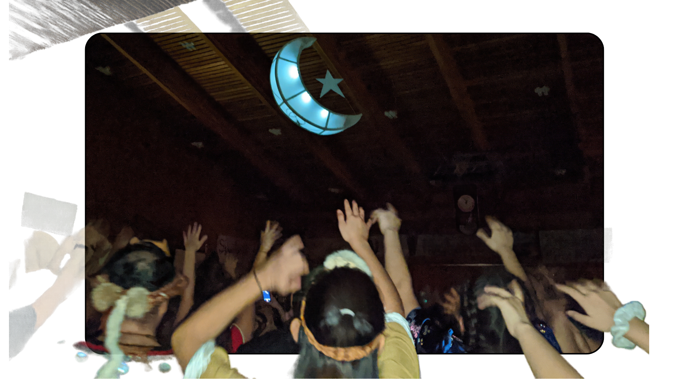

DISCOVERING THE HEART
Nisg̱a'a Language Revitalization
Nisg̱a'a language carries stories, songs, ceremonies, teachings, identity, and community knowledge across generations. This project honours learning that connects cultural memory with future possibilities.
Language is not just spoken words—it is the root of our worldview, woven into our land, traditions, and kinship ties. By embracing creative tools and modern digital spaces, we create accessible avenues for learners of all ages to listen, practice, and celebrate Nisg̱a'a heritage every day.
Together with Elders, knowledge keepers, families, and youth, our shared dedication ensures these voices continue to echo with pride and vitality for generations yet to come.

Language lives in relationships, learning, and community connection.